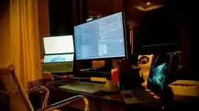

Primeiro, seu mundo.
Conversamos sobre sua empresa, seu público e o que precisa mudar.

DESIGN, TECNOLOGIA E IDENTIDADE
CRIAÇÃO DE SITES & SISTEMAS
Sua empresa merece ser inesquecível.
Sites que valorizam sua marca.
Sistemas que acompanham seu negócio.
01 / MEUS SERVIÇOS
Do site que apresenta sua empresa ao sistema que organiza sua operação. Escolha sua área e conheça as possibilidades.
PROJETO REAL · DESENVOLVIDO POR LUCAS
Um sistema de gestão desenvolvido para restaurantes, com áreas para mesas, comandas, caixa, delivery, produtos e equipe.
Quero um sistema assim ↗Interface original do projeto enviado · prévia visual da tela de acesso
Ampliar prévia do sistema ↗COMO POSSO AJUDAR
O visual atrai. A experiência conquista. A tecnologia sustenta. Tudo precisa trabalhar junto.
Menos tarefas repetitivas, mais espaço para crescer. Sistemas pensados para a rotina da sua equipe, com as funcionalidades que o seu negócio realmente precisa.
Uma presença digital que traduz a qualidade do seu trabalho. Hierarquia clara, navegação intuitiva e caminhos simples para o visitante entrar em contato.
Identidade, movimento e interação com intenção. Interfaces que se adaptam à tela e dão personalidade à sua marca em cada detalhe.
DESIGN · CÓDIGO · EXPERIÊNCIA
03 / POR TRÁS DO CÓDIGO
Sou Lucas Borges, desenvolvedor e criador da Borges Infinity. A empresa nasce da vontade de transformar ideias em experiências que fazem sentido. Eu desenvolvo sites e sistemas para aproximar marcas de pessoas e facilitar a rotina de empresas.
Por aqui, você fala com quem cria. Do primeiro rascunho ao último ajuste, cada decisão parte de uma pergunta: como isso pode ajudar o seu negócio?
Vamos conversar no WhatsApp ↗04 / DA IDEIA À EXPERIÊNCIA
Conversamos sobre sua empresa, seu público e o que precisa mudar.
Definimos a experiência e a direção visual antes de avançar.
Desenvolvimento, adaptação às telas e testes das funcionalidades.
Publicação e orientação para você dar os próximos passos.
SEU ENDEREÇO NA INTERNET
Além de um bom site, sua empresa precisa de um endereço fácil de lembrar e de um lugar para mantê-lo disponível.
Endereço ilustrativo · registro sujeito à disponibilidade
É o endereço que o cliente digita para encontrar sua empresa. O registro precisa ser renovado e deve ficar vinculado ao titular combinado na contratação.
É a estrutura que armazena e disponibiliza o projeto. A escolha depende dos recursos e das necessidades do site ou sistema.
Definimos domínio, hospedagem, conexão HTTPS, renovação e responsabilidades de manutenção. Assim, você sabe o que está incluído e quais custos são recorrentes.
Já tem domínio ou hospedagem? Me conte o que utiliza para avaliarmos a configuração.
Quero meu site com domínio ↗05 / PERGUNTAS FREQUENTES
Respostas para ajudar você a dar o próximo passo com mais clareza.
Fale diretamente com quem vai criar seu projeto.
Tirar uma dúvida no WhatsApp ↗O valor depende do que você precisa: quantidade de páginas, funcionalidades, integrações e nível de personalização. Me conte sua ideia no WhatsApp para definirmos o escopo e eu preparar um orçamento para o seu projeto.
O prazo é combinado conforme o tamanho e a complexidade do projeto, além da disponibilidade dos textos, fotos e informações da empresa. O cronograma é definido na proposta, antes do início do desenvolvimento.
Sim. Os sites são desenvolvidos para se adaptar a celulares, tablets e computadores. Nos sistemas, a interface é planejada considerando os dispositivos e as tarefas da sua equipe.
Sim. O desenvolvimento pode ser personalizado para sua operação. Primeiro conversamos sobre sua rotina e suas necessidades; depois definimos quais módulos e funcionalidades farão parte do projeto.
É útil reunir o logotipo, os serviços, os contatos e fotos que você tem autorização para usar. Se ainda faltar algum material, conversamos sobre o que será necessário e como organizar o conteúdo antes de começar.
O domínio é o endereço do site; a hospedagem mantém os arquivos e recursos disponíveis. Registro, renovação, hospedagem e manutenção têm condições próprias, alinhadas na proposta. Se você já possui esses serviços, avaliamos como aproveitá-los. Entenda domínio e hospedagem →
Podemos combinar ajustes, manutenção e novas funcionalidades. O período de suporte, as revisões incluídas e eventuais custos adicionais são definidos na proposta para que você saiba como será o atendimento.
Clique no serviço que você deseja ou no botão de WhatsApp. A conversa abre diretamente comigo, Lucas, e a mensagem já indica o serviço escolhido. Você pode editar o texto antes de enviar e contar mais sobre sua ideia.
06 / O PRÓXIMO PROJETO PODE SER O SEU
Fale diretamente comigo no WhatsApp: (62) 99901-2617.
Fotos ilustrativas dos segmentos, via Unsplash: vnwayne fan (restaurante), Moment PTP (academia), Fahmi Huwaidy (mercado), lee seunghyub (padaria), Katarzyna Zygnerska (odontologia), Wesley Tingey (advocacia), Lucas Kepner (engenharia) e Caroline Badran (escritórios) e Boitumelo (ambiente de desenvolvimento). Não representam clientes da Borges Infinity.